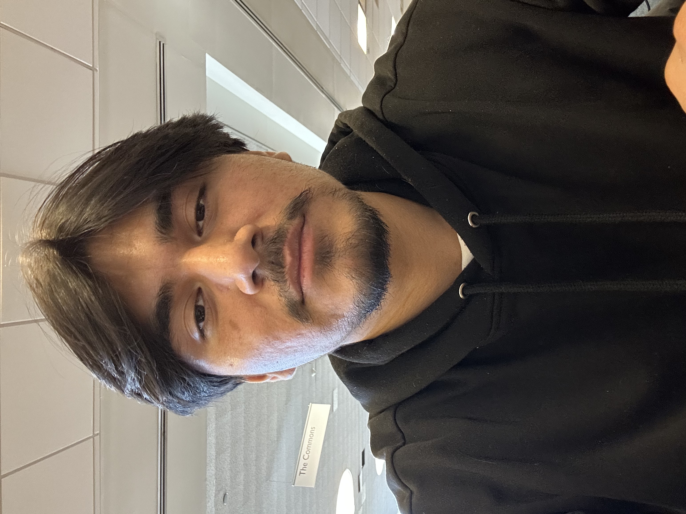

Ever since I can remember, I've been fascinated by computers. However, my true passion developed
when I attended Queens Technical High School. There,
I participated in their exploratory
program, which introduces students to different career paths to help them discover what
they want to pursue in life.
Because I found the hands-on shop classes so intriguing—especially on the tech side—I explored
all the beginner-friendly options and ultimately chose the Cisco Networking track. I really
enjoyed the coursework and practical training in Packet Tracer, which involved configuring
switches, setting up virtual networks, assigning IP addresses, and managing port restrictions.
I thought I had found my ultimate calling, until I transitioned from traditional networking into
cloud computing through the Amazon Web Services
Academy. Without boring you with too many technical details, I will just say it was one
of the most thrilling and eye-opening opportunities I could have ever been presented with. I
wish I could showcase my projects from this era, but sadly I don't have them saved nor do I have
the account access anymore.
Anyways, that pretty much explains why I have chosen to follow a field related to technology as
I have always been surrounded by it since a child and hope to one day be a success in the real
world.

Hi there, my name is Richard Garnica and I have prepared a little portfolio for you all, but before that let me tell you a little bit about myself. I am currently a senior in Queens College studying Computer Science who is expected to graduate by the end of the fall semester (December 2026).
Why Technology?
Skills & Core Toolkit
Technologies & Tools
Throughout my academic studies, I've developed the following skills in technology:
- Java / C++
- HTML & CSS
- JavaScript
- SQL
- AWS Infrastructure
- Git / GitHub
- Networking Cisco Packet Tracer
Soft Skills
- Communicate effectively
- Teamwork
- Problem Solving
- MultiTasking
- Critical Thinking
- Adaptability
Key Milestones
Bachelors
Soon to graduate from Queens College with a bachelors of science in Computer Science.
AWS Milestone
Gained operational insight into virtualization and scalable cloud networks.
Job related
Created and deployed a network infrastructure using switches and ethernet cabling to connect multiple arcade machines, enabling payment processing and gameplay across all arcade machines.
Hands on experience with PCB boards and electrical components as well
Featured Work
Here are some projects I've done over the years
-

Eight Queens Problem
Finds all set up where 8 queens don't pose a threat to one another. Meaning they are not in the same row, column, or diagonal. Where 1 represents a queens and 0 an empty space.
Language used: C++
View Code View Fancy Version -

Towers of Hanoi
Goal is to move all disks one by one onto a different tower without placing a larger disk on top of a smaller one. This project allows you to specify the number of rings you start with and returns step by step the number of moves you need to make.
Language used: C++
View Code
Dreams, Goals, & Passions
Professional Aspirations
Well to be quite honest, I am not completely sure of what to truly persue in life yet. I find
majority of the material I have learned/heard about in my studies, as well as personal time,
interesting.
However, there has been this notion that I haven't been able to shake off just yet from the time
I used to teach students and tutor my peers.
I guess what I'm trying to say is that I haven't shaken off the idea of becoming a
teacher/professor in this field of study and so may lean towards educating the kids of tomorrow.
It's either that or becoming a software engineer, whom one day will be part of a team whom
created a major plateform that is used at the current date in time.
My Spare Time
- Play sports (handball, soccer, volleyball)
- Listen to music (any type)
- Go for a random walk
- Work like theres no tomorrow
- Spend time with my family
- Cook/bake
- Read books
- Watch movies